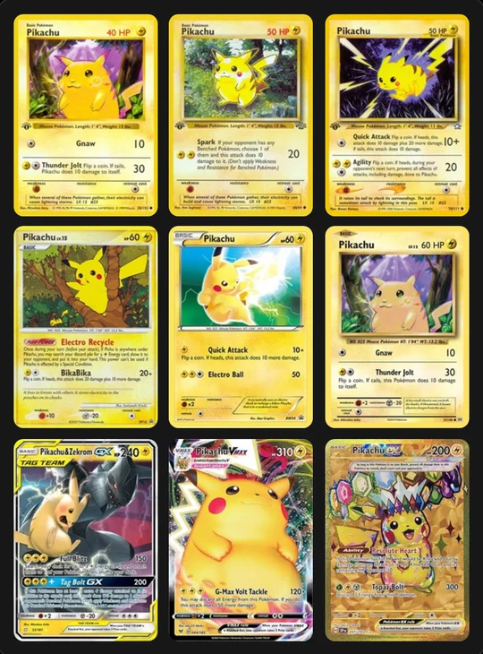

Pokémon binder page
The Pikachu binder page

The page, pocket by pocket
Read it left to right, top to bottom: the first three are the early years, the middle row the years between, and the bottom row the big modern cards.
| Card | Set | Year | |
|---|---|---|---|
| 1 | Pikachu 58/102 | Base Set | 1999 |
| 2 | Pikachu 60/64 | Jungle | 1999 |
| 3 | Pikachu 70/111 | Neo Genesis | 2000 |
| 4 | Pikachu DP16 | Diamond & Pearl promo | 2007 |
| 5 | Pikachu BW54 | Black & White promo | 2012 |
| 6 | Pikachu 35/108 | Evolutions | 2016 |
| 7 | Pikachu & Zekrom GX 33/181 | Team Up | 2019 |
| 8 | Pikachu VMAX 044/185 | Vivid Voltage | 2020 |
| 9 | Pikachu ex 247/191 | Surging Sparks | 2024 |
The same drawing, seventeen years apart
Look at pockets one and six. The Evolutions Pikachu from 2016 reuses the Base Set drawing by Mitsuhiro Arita, with a newer frame around it. On a timeline page the pair shows how much the card changed while Pikachu stayed the same. For a page about that alone, sleeve them side by side.
Three layouts, compared
1. Oldest to newest. The page pictured above. One Pikachu per era, read like a timeline.
2. The evolution line. Three Pichu on the top row, three Pikachu in the middle and three Raichu at the bottom. Each row is one Pokémon, and the page reads down the way they evolve.
The evolution line: Pikachu holds the middle row.
3. Special Pikachus. Pikachu has many versions of its own, and the builder lists them by name: Surfing Pikachu and Flying Pikachu in Evolutions and Celebrations, and Pikachu with Grey Felt Hat as a Scarlet & Violet promo. Nine of those make a page no other Pokémon can.
| Layout | Pages | Best for |
|---|---|---|
| Oldest to newest | 1 | Pikachu's whole history at a glance |
| Evolution line | 1 | Pichu, Pikachu and Raichu together |
| Special Pikachus | 1 or more | The versions only Pikachu has |
Try it before you sleeve
Moving nine cards around a real page is slow, and every move risks a scuff. Try the order on screen first, as many times as you like.
- Open the free page builder. No account needed.
- Type Pikachu. The builder lists Pikachu cards with the set each one comes from. Add a set name, such as Pikachu Jungle, to see only that set's cards.
- Tap one card for each pocket, oldest first. Pockets fill in the order you tap.
- Tap See page. Tap a card to take it out, then add another, until the page looks right.
- Keep the page with a free account, then sleeve the real cards in the same order.
Questions
How many Pikachu cards are there?
Hundreds, once promos and every version count. That is far too many for one page, so a Pikachu page is a choice of nine: one per era, one per look or your nine favourite drawings.
Which Pikachu starts the page?
The Base Set Pikachu, 58/102, from 1999, the first English set. Jungle and Neo Genesis Pikachu follow it on the top row.
Do two Pikachu cards share the same drawing?
Yes. The Evolutions Pikachu from 2016 uses the Base Set drawing by Mitsuhiro Arita, so pockets one and six show the same picture seventeen years apart.
Can I swap in a different Pikachu?
Yes. Type Pikachu and a set name in the builder, such as Pikachu Jungle, and tap the card you want. Tap a card on the page to take it out.
Is the page builder free?
Yes. Planning a page needs no account. Keeping it makes a free account, which never asks for payment details.
More guides: Binder theme ideas · Favorite Pokémon binder · Eevee family page · Starter Pokémon page · Legendary page · Binder page planner · Charizard page
Pokémon is a trademark of its owners. Beltstra is an independent app and is not affiliated with or endorsed by them.